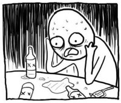

Модальные глаголы can, may, might, must, should, have to
Модальные глаголы это особая группа глаголов, которые обычно никак не изменяются в предложении и показывают лишь отношение говорящего к действию, а само действие выражено следующими за ними глаголами. В английский речи без них практически невозможно обойтись, это одна из самых базовых тем, поэтому вы уже давно столкнулись с такими глаголами, как ‘can’, ‘should’. Глаголы будущего времени ‘shall’ и ‘will’ также являются модальными глаголами. В этом уроке мы рассмотрим ещё несколько важных модальных глаголов, а именно: may, might, must и have to.
Глаголы, которые идут после модальных глаголов, стоят в начальной форме (инфинитиве) без частицы ‘to’.
can
Модальный глагол ‘can’ мочь показывает физическую способность что-либо сделать, иногда может не переводиться:
He can do it. – Он может это сделать.
I can hear you. – Я тебя слышу. (досл.: я могу тебя слышать)
Отрицательной формой является: cannot. Да, ‘not’ почему-то слилась с ‘can’, но можно также использовать и раздельный вариант: can not. Но первый вариант предпочтительнее. А сокращённым вариантом является: can’t.
She cannot do it. – Она не может это сделать.
I can’t hear you. – Я тебя не слышу.
He can’t be wrong. – Он не мог ошибиться (досл.: он не может быть неправ)
may
Модальный глагол ‘may’ также переводится словом ‘может’, как и ‘can’, но разница в том, что он не показывает физическую способность, а показывает значение вероятности или разрешения.
He may come now. – Он может прийти сейчас.
May I use your phone? – Можно я воспользуюсь твоим телефоном?
Спросить разрешение можно и глаголом ‘can’, но не рекомендуется, второй пример показывает почему:
May I come in? – Можно мне войти? (правильный вариант)
— Can I come in? – Могу я войти?
— You can, but you may not. – Вы можете, но вам нельзя. (досл.: но не можете)
В прошлом уроке у нас было такое слово: ‘maybe’, а вот вам ещё: ‘may be’. Оба переводятся как: может быть, возможно. Разница грамматическая: первое слово – наречие, а ‘may be’ это модальный глагол с обычным глаголом.
Maybe you’re right. – Возможно/может быть, ты прав.
You may be right. – Ты, может быть/возможно, прав.
might
И ‘might’ /maɪt/ у нас тоже переводится как ‘может’. Да сколько их там ещё одинаковых?

В настоящем времени ‘might’ отличается от ‘may’ степенью вероятности. Вероятность с ‘might’ ниже, чем с ‘may’:
He may build a house. – Он может построить дом.
He might build a house. – Он может построить дом (вероятность, что он его построит, ниже).
‘Can’ может показывать общую вероятность (он может построить дом, он способен на это), но для конкретных случаев он не подходит.
В прошедшем времени вместо обоих ‘may’ и ‘might’ используется только ‘might’. В этом уроке мы не будем затрагивать прошедшее и будущее время, т.к. это может ещё больше вас запутать (продолжим тему в уроке 24).
С тремя ‘может’ разобрались, теперь будут три ‘должен’, хотя можно и четыре...")
should
Когда вы даёте человеку совет или высказываете своё мнение, можно использовать модальный глагол ‘should’, который дословно будет переводиться как ‘следует’, но иногда для русского языка лучше переводить его словами: бы, нужно, должен.
You should go to bed. – Тебе бы пойти поспать.
You shouldn’t (= should not) believe everything (that) you read in the news. – Вам не следует верить всему, что вы читаете в новостях.
It should be twelve dollars, not eighteen. – Оно должно стоить (досл.: быть) двенадцать долларов, (а) не восемнадцать.
She should be here any minute. – Она будет с минуты на минуту. (досл.: должна быть здесь в любую минуту)
must
Модальный глагол ‘must’ является самым главным ‘должен’ из всех, т.е. именно так он и будет переводиться. Сравним сразу со следующим.
have to
Модальный глагол ‘have to’ именно так и пишется, вместе с частицей ‘to’, которая здесь является частью модального глагола, а не следующего после него глагола. Переводится он также словом ‘должен’. В отличие от остальных модальных глаголов, ‘have to’ изменяется по лицам и временам так же, как и глагол ‘have’.
Разница между ‘must’ и ‘have to’ в том, что ‘have to’ используется тогда, когда есть какие-то внешние обстоятельства, которые заставляют вас что-то делать, а с ‘must’ вы как бы сами себя заставляете.
I must do it. – Я должен это сделать (сам решил).
I have to do it. – Я должен это сделать (обстоятельства заставляют).
We must leave early. – Мы должны уйти рано.
We have to leave early. – Мы должны уйти рано.
We had to leave early. – Мы должны были уйти рано.
We will have to leave early. – Мы должны будем уйти рано.
Как вы видите, разница между ними стирается в прошлом и будущем времени, т.к. в этих временах возможен только вариант с ‘have to’.
А вот отрицательные формы имеют несколько разные значения. ‘Must not’ (mustn’t) имеет более строгое значение того, что этого делать не надо (поэтому, не делайте этого). А ‘do not have to’ говорит, что этого делать нельзя, но если хочешь, то можно.
You mustn’t tell anyone. – Ты никому не должен рассказывать.
You don’t have to tell her, but you can if you want to. – Тебе не обязательно ей рассказывать, но ты можешь, если хочешь.
Модальные глаголы активно используются как просто с глаголом be (простое время), так и с формой continuous (длительное время). Фраза ‘must be’ дословно переводится как ‘должно быть’, но также может переводиться: возможно, вероятно, наверняка, наверное и др. (как и другие модальные глаголы)
He must be busy. – Он, должно быть, занят.
They may be getting close to the end. – Они, возможно, приближаются к концу (какого-нибудь дела, например).
She might be having lunch. – Она, возможно, обедает.
Диалог урока очень хорош для текущей темы урока, в нём присутствуют как модальные глаголы, так ещё и несколько слов на тему вероятности: likely, probably, pretty. Таким образом, у нас будет 4 варианта для слова ‘возможно’.
likely = probably
Если глянуть в англоязычный словарь, в нём можно увидеть такое: likely = adverb probably. Т.е. в качестве наречия ‘likely’ = ‘probably’. Разница между ними, в основном, грамматическая. ‘Probably’ является только наречием и всё. ‘Likely’ же является и наречием, и прилагательным. Чаще вы его встретите в роли прилагательного, а для этого перед ним должен стоять глагол ‘to be’, а после него глагол в инфинитиве.
He will probably come. = He is likely to come. – Он, вероятно, придёт.
They will probably sell their house. = They are likely to sell their house. – Они, вероятно, продадут свой дом.
‘Likely’ может быть в отрицательной форме: not likely (или unlikely). В этом случае он может переводиться как: вряд ли. (пример будет в диалоге)
pretty
‘Pretty’ является словом из другой группы слов вероятности, которым можно посвятить отдельный урок. На данный момент важно знать, что это не только ‘милый; хорошенький, симпатичный’ (см. урок 9), но и: вполне, совсем, довольно, довольно-таки, весьма. Показывает умеренно высокую степень чего-либо, может не переводиться. Часто используется для усиления слова ‘sure’ (уверен).
I’m pretty busy these days. – Я очень занят в последнее время. (досл.: я довольно занят (в) эти дни)
I’m pretty sure (that) you weren’t there. – Я уверен/убеждён, что тебя там не было.
А теперь можно перейти к диалогу, он разделён на 2 части, в конце первой части вырезано предложение из-за сложности темы, в переводе оно дано для связки со второй частью диалога.

— Don’t try to run. You’re a long way from1 home, son.
— Don’t call me that.
— Parents must be worried about you.
— Yeah, not likely.
 — Okay, sore subject. That was a nice lift back there. You’re pretty good.
— Okay, sore subject. That was a nice lift back there. You’re pretty good.
— I don’t know what you’re talking about, old man.
— Hey. Don’t call me that. Your technique is really2 sloppy, though3. You’re telegraphing all your moves.
— You’re crazy.
— Yeah? ...

Notes:
- ‘a long way from’: далеко от. Фиксированная фраза.
- ‘really’: помимо пройденных переводов ‘действительно, в самом деле’, также используется для усиления: очень, чрезвычайно, крайне.
- ‘though’ /ðəʊ/: хотя, тем не менее, однако. Обратите внимание, что оно стоит в конце, и является наречием, которое надо выделять запятыми (хотя это часто не делают). Также оно может быть союзом и соединять части предложения (об этом позже), переводом в таком случае будет: хотя. Именно ‘хотя’ больше подходит для дословного значения, т.к. для ‘однако’ есть более конкретное слово (however).
— Probably figured1 me for an easy mark. But you picked the wrong guy, pal. Ah-ah.
— What?
— My wallet. Fine, maybe we’ll just call the police.
— Go ahead2. ‘Course3 they might wonder why a middle-aged tourist is following4 young boys down alleyways.
— You are a crafty little beggar, aren’t you?
— I know how to take care of myself. Anyway, I’m pretty sure you don’t like the cops any more than I do.
— Good point5... Kid... The wallet.
— Had to try.
— ‘Course3 you did.
Notes:
- ‘figure’ /'fɪgə/: считать, думать, полагать. Дополнительная путаница для вас, т.к. у нас уже есть слова: think, suppose, guess. В отличие от остальных, оно самое разговорное, поэтому на письме его использовать не нужно (в этом смысле). Помимо данного значения, у него есть более дословный вариант: фигура; а также: цифра. Поэтому слово ‘считать’ является более дословным переводом, чем все остальные. Подытожим эти четыре слова (think, suppose, guess, figure) следующими переводами: думать, полагать, предположить, считать.
- ‘go ahead’: переводится либо дословно: идти вперёд, либо имеется в виду, что нужно начать что-либо делать: давай, вперёд (делай то, о чём ты говорил).
- ‘course = of course (конечно). Апостроф показывает, что ‘of’ не произнесено.
- ‘follow’ /'fɔləʊ/: следовать, идти за. Обратите внимание, что после слова нет предлога.
- ‘good point’: часто используемая фраза, у которой нет дословного перевода. Имеется в виду, что собеседник сделал ‘хорошее замечание’, и с этим замечанием согласны.
Словарь
alleyway /'ælɪweɪ/ переулок; улочка
anyway /'enɪweɪ/ в любом случае
beggar /'begə/ 1) попрошайка, нищий; 2) шутливое парень, малый; плут
believe /bɪ'liːv/ верить
call /kɔːl/ 1) звонить; вызывать; 2) называть
cop /kɔp/ коп, фараон (полицейский)
crafty /'krɑːftɪ/ лукавый, хитроумный, хитрый
easy /'iːzɪ/ лёгкий, нетрудный
figure /'fɪgə/ считать, думать, полагать
follow /'fɔləʊ/ (пре)следовать, идти за
have to должен, обязан
lift /lɪft/ 1) поднятие; 2) кража, воровство, грабёж
likely /'laɪklɪ/ вероятный, возможный
mark /mɑːk/ мишень, цель
may /meɪ/ может
middle-aged /ˌmɪdl'eɪʤd/ средних лет
might /maɪt/ может
move /muːv/ 1) двигать(ся), передвигать(ся); 2) движение, действие; ход, шаг 3) переезжать, переселяться
must /mʌst/ должен
old man старик
pal /pæl/ друг, приятель
point /pɔɪnt/ точка; момент; вопрос; дело
police /pə'liːs/ полиция
pretty /'prɪtɪ/ 1) adj. милый; хорошенький, симпатичный; 2) adv. вполне, совсем, довольно, довольно-таки, весьма
probably /'prɔbəblɪ/ вероятно, возможно, наверное
really /'rɪəlɪ/ 1) действительно, в самом деле; 2) очень, чрезвычайно, крайне (для усиления)
sloppy /'slɔpɪ/ неряшливый, небрежный
sore /sɔː/ больной, болезненный
subject /'sʌbʤekt/ тема, предмет разговора
take care (of) заботиться (о)
technique /tek'niːk/ техника; мастерство; умение
telegraph /'telɪgrɑːf/ 1) телеграф; 2) выдавать, обнаруживать (свои намерения, чувства) жестом или взглядом
though /ðəʊ/ хотя; тем не менее; однако
tourist /'tʊərɪst/ путешественник, турист
wallet /'wɔlɪt/ бумажник
wonder /'wʌndə/ n. 1) удивление; 2) чудо; v. 3) удивляться; 4) интересоваться; размышлять, сомневаться
worried /'wɒrɪd/ встревоженный, озабоченный
wrong /rɔŋ/ 1) adj. неправильный, неверный; 2) adv. неверно, неправильно
Упражнения
Упражнение 1. Переведите с английского на русский.
- You must take care of your parents.
- May I show you something?
- You have to pick something that is very important to both of you.
- How can I believe you when you lie about everything?
- Someone might be following you.
- There may be a way to find out.
- It’s unlikely that you will call the police.
- He’s probably just a tourist.
- You have to make your technique less sloppy.
- There must be something (that) I can do for you.
- You may be doing it all wrong.
- Anyway, I figured (that) you might want this.

Упражнение 2. Переведите с русского на английский.
- Ты, должно быть, волнуешься о своей жене и детях.
- Ты можешь думать, что ты прав, но мы знаем, что ты не прав.
- Мы должны вызвать полицию, или (это) будет слишком поздно.
- Я действительно должен найти лёгкую цель?
- Видишь кого-нибудь? Я думаю, что они могут следить за тобой (сейчас).
- Я знаю, что это, должно быть, больная тема для тебя, но где твой отец?
- Почему тебе пришлось/ты должен был туда поехать/идти?
- Вам, наверное, интересно (досл.: вы можете удивляться/интересоваться), что я тут делаю один.
- Я должен знать, как постоять за себя.
- Ты можешь думать, что ты хитроумный, но ты просто маленький попрошайка.
- Я не обязан отвечать на вопросы, но я отвечаю на них.
- Вы не можете ничего не знать, вы должны знать что-нибудь. (в английском должно быть только одно отрицание, в русской версии их здесь аж 3)
Примечание: уроки с 20 по 26 включительно - переходные, я бы сказал переход из детского сада в школу :) Будут сразу несколько сложных тем, но те, кто осилит эти уроки, уже точно сможет осилить и все 52, поэтому, возьмите себя в руки, потратьте чуть больше времени, но пройдите их; и не забывайте, что для облегчения задачи прохождения всего курса есть приложения для телефона.
Курс доступен в виде приложения на iOS и андроид (подробнее в уроке 1):